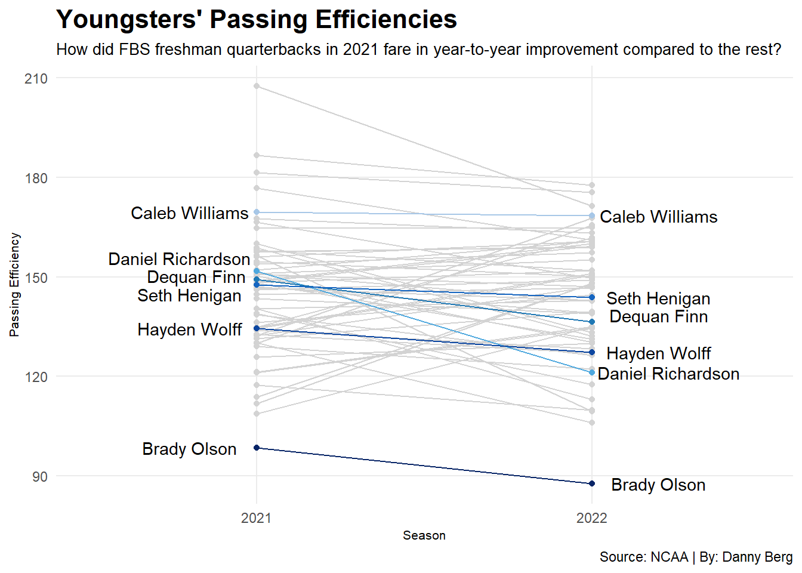
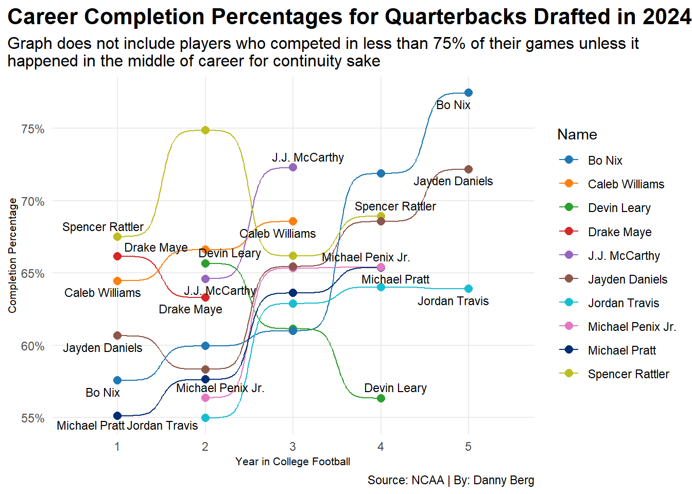

library(tidyverse)
library(ggplot2)
library(ggalt)
library(ggtext)
library(patchwork)
library(ggbump)
library(scales)
library(ggrepel)loading data
qbs14 <- read_csv("C:/Users/danny/OneDrive/Desktop/SPMC 350/Blog/Project 1 CSVs/2014 Passing Efficiency.csv") |>
mutate(Season = "2014")Rows: 104 Columns: 12
── Column specification ────────────────────────────────────────────────────────
Delimiter: ","
chr (4): Name, Team, Cl, Pos
dbl (8): Rank, G, Pass Att, Pass Com, Int, Pass Yds, Pass TD, Pass Eff
ℹ Use `spec()` to retrieve the full column specification for this data.
ℹ Specify the column types or set `show_col_types = FALSE` to quiet this message.qbs15 <- read_csv("C:/Users/danny/OneDrive/Desktop/SPMC 350/Blog/Project 1 CSVs/2015 Passing Efficiency.csv") |>
mutate(Season = "2015")Rows: 113 Columns: 12
── Column specification ────────────────────────────────────────────────────────
Delimiter: ","
chr (4): Name, Team, Cl, Pos
dbl (8): Rank, G, Pass Att, Pass Com, Int, Pass Yds, Pass TD, Pass Eff
ℹ Use `spec()` to retrieve the full column specification for this data.
ℹ Specify the column types or set `show_col_types = FALSE` to quiet this message.qbs16 <- read_csv("C:/Users/danny/OneDrive/Desktop/SPMC 350/Blog/Project 1 CSVs/2016 Passing Efficiency.csv") |>
mutate(Season = "2016")Rows: 109 Columns: 12
── Column specification ────────────────────────────────────────────────────────
Delimiter: ","
chr (4): Name, Team, Cl, Pos
dbl (8): Rank, G, Pass Att, Pass Com, Int, Pass Yds, Pass TD, Pass Eff
ℹ Use `spec()` to retrieve the full column specification for this data.
ℹ Specify the column types or set `show_col_types = FALSE` to quiet this message.qbs17 <- read_csv("C:/Users/danny/OneDrive/Desktop/SPMC 350/Blog/Project 1 CSVs/2017 Passing Efficiency.csv") |>
mutate(Season = "2017")Rows: 110 Columns: 12
── Column specification ────────────────────────────────────────────────────────
Delimiter: ","
chr (4): Name, Team, Cl, Pos
dbl (8): Rank, G, Pass Att, Pass Com, Int, Pass Yds, Pass TD, Pass Eff
ℹ Use `spec()` to retrieve the full column specification for this data.
ℹ Specify the column types or set `show_col_types = FALSE` to quiet this message.qbs18 <- read_csv("C:/Users/danny/OneDrive/Desktop/SPMC 350/Blog/Project 1 CSVs/2018 Passing Efficiency.csv") |>
mutate(Season = "2018")Rows: 113 Columns: 12
── Column specification ────────────────────────────────────────────────────────
Delimiter: ","
chr (4): Name, Team, Cl, Pos
dbl (8): Rank, G, Pass Att, Pass Com, Int, Pass Yds, Pass TD, Pass Eff
ℹ Use `spec()` to retrieve the full column specification for this data.
ℹ Specify the column types or set `show_col_types = FALSE` to quiet this message.qbs19 <- read_csv("C:/Users/danny/OneDrive/Desktop/SPMC 350/Blog/Project 1 CSVs/2019 Passing Efficiency.csv") |>
mutate(Season = "2019")Rows: 109 Columns: 12
── Column specification ────────────────────────────────────────────────────────
Delimiter: ","
chr (4): Name, Team, Cl, Pos
dbl (8): Rank, G, Pass Att, Pass Com, Int, Pass Yds, Pass TD, Pass Eff
ℹ Use `spec()` to retrieve the full column specification for this data.
ℹ Specify the column types or set `show_col_types = FALSE` to quiet this message.qbs20 <- read_csv("C:/Users/danny/OneDrive/Desktop/SPMC 350/Blog/Project 1 CSVs/2020 Passing Efficiency.csv") |>
mutate(Season = "2020")Rows: 108 Columns: 12
── Column specification ────────────────────────────────────────────────────────
Delimiter: ","
chr (4): Name, Team, Cl, Pos
dbl (8): Rank, G, Pass Att, Pass Com, Int, Pass Yds, Pass TD, Pass Eff
ℹ Use `spec()` to retrieve the full column specification for this data.
ℹ Specify the column types or set `show_col_types = FALSE` to quiet this message.qbs21 <- read_csv("C:/Users/danny/OneDrive/Desktop/SPMC 350/Blog/Project 1 CSVs/2021 Passing Efficiency.csv") |>
mutate(Season = "2021")Rows: 109 Columns: 12
── Column specification ────────────────────────────────────────────────────────
Delimiter: ","
chr (4): Name, Team, Cl, Pos
dbl (8): Rank, G, Pass Att, Pass Com, Int, Pass Yds, Pass TD, Pass Eff
ℹ Use `spec()` to retrieve the full column specification for this data.
ℹ Specify the column types or set `show_col_types = FALSE` to quiet this message.qbs22 <- read_csv("C:/Users/danny/OneDrive/Desktop/SPMC 350/Blog/Project 1 CSVs/2022 Passing Efficiency.csv") |>
mutate(Season = "2022")Rows: 112 Columns: 12
── Column specification ────────────────────────────────────────────────────────
Delimiter: ","
chr (4): Name, Team, Cl, Pos
dbl (8): Rank, G, Pass Att, Pass Com, Int, Pass Yds, Pass TD, Pass Eff
ℹ Use `spec()` to retrieve the full column specification for this data.
ℹ Specify the column types or set `show_col_types = FALSE` to quiet this message.qbs23 <- read_csv("C:/Users/danny/OneDrive/Desktop/SPMC 350/Blog/Project 1 CSVs/2023 Passing Efficiency.csv") |>
mutate(Season = "2023")Rows: 106 Columns: 12
── Column specification ────────────────────────────────────────────────────────
Delimiter: ","
chr (4): Name, Team, Cl, Pos
dbl (8): Rank, G, Pass Att, Pass Com, Int, Pass Yds, Pass TD, Pass Eff
ℹ Use `spec()` to retrieve the full column specification for this data.
ℹ Specify the column types or set `show_col_types = FALSE` to quiet this message.qbs24 <- read_csv("C:/Users/danny/OneDrive/Desktop/SPMC 350/Blog/Project 1 CSVs/2024 Passing Efficiency.csv") |>
mutate(Season = "2024")Rows: 118 Columns: 12
── Column specification ────────────────────────────────────────────────────────
Delimiter: ","
chr (4): Name, Team, Cl, Pos
dbl (8): Rank, G, Pass Att, Pass Com, Int, Pass Yds, Pass TD, Pass Eff
ℹ Use `spec()` to retrieve the full column specification for this data.
ℹ Specify the column types or set `show_col_types = FALSE` to quiet this message.qbs25 <- read.csv("C:/Users/danny/OneDrive/Desktop/SPMC 350/Blog/Project 1 CSVs/2025 Passing Efficiency(as of 11.10.25).csv") |>
mutate(Season = "2025")fixing 2025 (if needed)
no_qbs25 <- unedited_qbs25 |> separate(Player, into=c(“Name”, “Team”), sep=“,”) |> mutate(Team = gsub(“(FL)”, “FL”, Team, fixed=TRUE)) |> mutate(Team = gsub(“(OH)”, “OH”, Team, fixed=TRUE)) |> separate(Team, into=c(“Team”, “Conference”), sep=“\(”) |> mutate(Conference=gsub(“)”, ““, Conference))
filtering for freshmen and sophomores
qbs25_SO <- qbs25 |>
filter(Cl == "So.")
qbs24_FR <- qbs24 |>
filter(Cl == "Fr.")
qbs24_SO <- qbs24 |>
filter(Cl == "So.")
qbs23_FR <- qbs23 |>
filter(Cl == "Fr.")
qbs23_SO <- qbs23 |>
filter(Cl == "So.")
qbs22_FR <- qbs22 |>
filter(Cl == "Fr.")
qbs22_SO <- qbs22 |>
filter(Cl == "So.")
qbs21_FR <- qbs21 |>
filter(Cl == "Fr.")
qbs21_SO <- qbs21 |>
filter(Cl == "So.")
qbs20_FR <- qbs20 |>
filter(Cl == "Fr.")
qbs20_SO <- qbs20 |>
filter(Cl == "So.")
qbs19_FR <- qbs19 |>
filter(Cl == "Fr.")
qbs19_SO <- qbs19 |>
filter(Cl == "So.")
qbs18_FR <- qbs18 |>
filter(Cl == "Fr.")
qbs18_SO <- qbs18 |>
filter(Cl == "So.")
qbs17_FR <- qbs17 |>
filter(Cl == "Fr.")
qbs17_SO <- qbs17 |>
filter(Cl == "So.")
qbs16_FR <- qbs16 |>
filter(Cl == "Fr.")
qbs16_SO <- qbs16 |>
filter(Cl == "So.")
qbs15_FR <- qbs15 |>
filter(Cl == "Fr.")
qbs15_SO <- qbs15 |>
filter(Cl == "So.")
qbs14_FR <- qbs14 |>
filter(Cl == "Fr.")binding years and finding duplicates
fqbs24_25 <- bind_rows(qbs24_FR, qbs25_SO) |>
group_by(Name) |>
filter(n() == 2) |>
ungroup() |>
arrange(desc(Name))
fqbs23_24 <- bind_rows(qbs23_FR, qbs24_SO) |>
group_by(Name) |>
filter(n() == 2) |>
ungroup() |>
arrange(desc(Name))
fqbs22_23 <- bind_rows(qbs22_FR, qbs23_SO) |>
group_by(Name) |>
filter(n() == 2) |>
ungroup() |>
arrange(desc(Name))
fqbs21_22 <- bind_rows(qbs21_FR, qbs22_SO) |>
group_by(Name) |>
filter(n() == 2) |>
ungroup() |>
arrange(desc(Name))
fqbs20_21 <- bind_rows(qbs20_FR, qbs21_SO) |>
group_by(Name) |>
filter(n() == 2) |>
ungroup() |>
arrange(desc(Name))
fqbs19_20 <- bind_rows(qbs19_FR, qbs20_SO) |>
group_by(Name) |>
filter(n() == 2) |>
ungroup() |>
arrange(desc(Name))
fqbs18_19 <- bind_rows(qbs18_FR, qbs19_SO) |>
group_by(Name) |>
filter(n() == 2) |>
ungroup() |>
arrange(desc(Name))
fqbs17_18 <- bind_rows(qbs17_FR, qbs18_SO) |>
group_by(Name) |>
filter(n() == 2) |>
ungroup() |>
arrange(desc(Name))
fqbs16_17 <- bind_rows(qbs16_FR, qbs17_SO) |>
group_by(Name) |>
filter(n() == 2) |>
ungroup() |>
arrange(desc(Name))
fqbs15_16 <- bind_rows(qbs15_FR, qbs16_SO) |>
group_by(Name) |>
filter(n() == 2) |>
ungroup() |>
arrange(desc(Name))
fqbs14_15 <- bind_rows(qbs14_FR, qbs15_SO) |>
group_by(Name) |>
filter(n() == 2) |>
ungroup() |>
arrange(desc(Name))CHART 1
att_qbs21_22 <- bind_rows(qbs21, qbs22) |>
group_by(Name) |>
filter(n() == 2) |>
ungroup() |>
arrange(desc(Name))cw <- fqbs21_22 |> filter(Name == "Caleb Williams")
dr <- fqbs21_22 |> filter(Name == "Daniel Richardson")
df <- fqbs21_22 |> filter(Name == "Dequan Finn")
sh <- fqbs21_22 |> filter(Name == "Seth Henigan")
hw <- fqbs21_22 |> filter(Name == "Hayden Wolff")
bo <- fqbs21_22 |> filter(Name == "Brady Olson")ggplot() +
geom_line(data=att_qbs21_22, aes(x=Season, y=`Pass Eff`, group=Name), color="lightgrey") +
geom_point(data=att_qbs21_22, aes(x=Season, y=`Pass Eff`, group=Team), color="lightgrey") +
geom_line(data=cw, aes(x=Season, y=`Pass Eff`, group=Name), color="#A7C7E7") +
geom_point(data=cw, aes(x=Season, y=`Pass Eff`, group=Name), color="#A7C7E7") +
geom_line(data=dr, aes(x=Season, y=`Pass Eff`, group=Name), color="#4EA8DE") +
geom_point(data=dr, aes(x=Season, y=`Pass Eff`, group=Name), color="#4EA8DE") +
geom_line(data=df, aes(x=Season, y=`Pass Eff`, group=Name), color="#1F78B4") +
geom_point(data=df, aes(x=Season, y=`Pass Eff`, group=Name), color="#1F78B4") +
geom_line(data=sh, aes(x=Season, y=`Pass Eff`, group=Name), color="#1565C0") +
geom_point(data=sh, aes(x=Season, y=`Pass Eff`, group=Name), color="#1565C0") +
geom_line(data=hw, aes(x=Season, y=`Pass Eff`, group=Name), color="#0D47A1") +
geom_point(data=hw, aes(x=Season, y=`Pass Eff`, group=Name), color="#0D47A1") +
geom_line(data=bo, aes(x=Season, y=`Pass Eff`, group=Name), color="#082567") +
geom_point(data=bo, aes(x=Season, y=`Pass Eff`, group=Name), color="#082567") +
geom_text(data=cw |> filter(Season == min(Season)), aes(x=0.8, y=`Pass Eff`, group=Name, label=Name)) +
geom_text(data=cw |> filter(Season == max(Season)), aes(x=2.2, y=`Pass Eff`, group=Name, label=Name)) +
geom_text(data=dr |> filter(Season == min(Season)), aes(x=0.77, y=`Pass Eff` + 4, group=Name, label=Name)) +
geom_text(data=dr |> filter(Season == max(Season)), aes(x=2.23, y=`Pass Eff`, group=Name, label=Name)) +
geom_text(data=df |> filter(Season == min(Season)), aes(x=0.82, y=`Pass Eff` + 1, group=Name, label=Name)) +
geom_text(data=df |> filter(Season == max(Season)), aes(x=2.2, y=`Pass Eff` + 2, group=Name, label=Name)) +
geom_text(data=sh |> filter(Season == min(Season)), aes(x=0.8, y=`Pass Eff` - 3, group=Name, label=Name)) +
geom_text(data=sh |> filter(Season == max(Season)), aes(x=2.2, y=`Pass Eff`, group=Name, label=Name)) +
geom_text(data=hw |> filter(Season == min(Season)), aes(x=0.8, y=`Pass Eff`, group=Name, label=Name)) +
geom_text(data=hw |> filter(Season == max(Season)), aes(x=2.2, y=`Pass Eff`, group=Name, label=Name)) +
geom_text(data=bo |> filter(Season == min(Season)), aes(x=0.8, y=`Pass Eff`, group=Name, label=Name)) +
geom_text(data=bo |> filter(Season == max(Season)), aes(x=2.2, y=`Pass Eff`, group=Name, label=Name)) +
labs(
x = "Season",
y = "Passing Efficiency",
title="Youngsters' Passing Efficiencies",
subtitle = "How did FBS freshman quarterbacks in 2021 fare in year-to-year improvement compared to the rest?",
caption = "Source: NCAA | By: Danny Berg"
) +
theme_minimal(
) +
theme(
plot.title = element_text(size = 16, face = "bold"),
axis.title = element_text(size = 8),
plot.subtitle = element_text(size=10),
panel.grid.minor = element_blank())
CHART 2
f_qbs21_FR <- fqbs21_22 |>
filter(Cl == "Fr.") |>
add_row(Name = "FBS Average", Cl = "Fr.", `Int` = 8, `Pass TD` = 20) |>
mutate(Name = factor(Name, levels = c(setdiff(Name, "FBS Average"), "FBS Average")))graphic_1 <- f_qbs21_FR |>
arrange(`Pass TD`) |>
ggplot(aes(y = Name, x = Int, xend = `Pass TD`)) +
geom_dumbbell(
size = 2,
colour = "grey",
colour_x = "red",
colour_xend = "green"
) +
scale_x_continuous(limits = c(0, 50), breaks = seq(0, 45, by = 5)) +
labs(
x="Interceptions and touchdowns",
y="Freshman quarterbacks",
) +
theme_minimal(
) +
theme(
plot.title = element_text(face = "bold", size = 12),
plot.subtitle = element_textbox_simple()
)f_qbs22_SO <- fqbs21_22 |>
filter(Cl == "So.") |>
add_row(Name = "FBS Average", Cl = "Fr.", `Int` = 8, `Pass TD` = 19) |>
mutate(Name = factor(Name, levels = c(setdiff(Name, "FBS Average"), "FBS Average")))graphic_2 <- f_qbs22_SO |>
arrange(`Int`) |>
ggplot(aes(y = Name, x = Int, xend = `Pass TD`)) +
geom_dumbbell(
size = 2,
colour = "grey",
colour_x = "red",
colour_xend = "green"
) +
scale_x_continuous(limits = c(0, 50), breaks = seq(0, 45, by = 5)) +
labs(
x="Interceptions and touchdowns",
y="Sophomore quarterbacks",
) +
theme_minimal(
) +
theme(
plot.title = element_text(face = "bold", size = 12),
plot.subtitle = element_textbox_simple()
)combined_graphic <- graphic_1 + graphic_2 +
plot_layout(ncol = 2) +
plot_annotation(
title = "Touchdowns to Interceptions Among 2021 Freshman and 2022 Sophomore QBs",
subtitle = "The average of <span style='color:green;'>touchdowns</span> to <span style='color:red;'>interceptions</span> amongst FBS quarterbacks is included.",
caption = "Source = NCAA | By: Danny Berg",
) &
theme(
plot.title = element_text(face = "bold", size = 12),
plot.subtitle = element_textbox_simple(size = 10),
plot.caption = element_text(size = 9)
)combined_graphicWarning: Using the `size` aesthetic with geom_segment was deprecated in ggplot2 3.4.0.
ℹ Please use the `linewidth` aesthetic instead.
CHART 3
preparing data
master_qb_list <- bind_rows(qbs14, qbs15, qbs16, qbs17, qbs18, qbs19, qbs20, qbs21, qbs22, qbs23, qbs24, qbs25) |>
group_by(Name) |>
ungroup() |>
arrange(desc(Name))first_draft_2024 <- master_qb_list |>
filter(Name == "Caleb Williams" | Name == "Jayden Daniels" | Name == "Drake Maye" | Name == "Michael Penix Jr." | Name == "J.J. McCarthy" | Name == "Bo Nix" | Name == "Spencer Rattler" | Name == "Jordan Travis" | Name == "Joe Milton" | Name == "Devin Leary" | Name == "Michael Pratt") |>
mutate(
Cl = ifelse(Name == "Jordan Travis" & Cl == "Sr." & `Pass TD` == 15, "Jr.", Cl),
Cl = ifelse(Name == "Jordan Travis" & Cl == "Jr." & `Pass TD` == 24, "Sr.", Cl),
Cl = ifelse(Name == "Jordan Travis" & Cl == "Sr." & `Pass TD` == 20, "Gr.", Cl),
Cl = ifelse(Name == "Michael Pratt" & Cl == "Fr." & G == 12, "So.", Cl),
Cl = ifelse(Name == "Jayden Daniels" & Cl == "Sr." & `Pass TD` == 40, "Gr.", Cl),
Cl = ifelse(Name == "Bo Nix" & Cl == "Sr." & `Pass TD` == 45, "Gr.", Cl)
) |>
add_row(Name = "Spencer Rattler", Cl = "So.", `Pass Att` = 187, `Pass Com` = 140) |>
add_row(Name = "Devin Leary", Cl = "Jr.", `Pass Att` = 193, `Pass Com` = 118) |>
arrange(desc(Name))draft_2024 <- first_draft_2024 |>
mutate(PassingEff = `Pass Com`/`Pass Att`) |>
mutate(Cl = gsub("Fr.", "1", Cl, fixed=TRUE)) |>
mutate(Cl = gsub("So.", "2", Cl, fixed=TRUE)) |>
mutate(Cl = gsub("Jr.", "3", Cl, fixed=TRUE)) |>
mutate(Cl = gsub("Sr.", "4", Cl, fixed=TRUE)) |>
mutate(Cl = gsub("Gr.", "5", Cl, fixed=TRUE)) |>
mutate(Cl = as.numeric(as.character(Cl)))creating chart 3
ggplot() +
geom_bump(data=draft_2024, aes(x = Cl, y = PassingEff, colour = Name, group = Name)) +
geom_point(data=draft_2024, aes(x = Cl, y = PassingEff, colour = Name, group = Name), size = 2.5) +
geom_text_repel(data = draft_2024 |> group_by(Name) |> filter(Cl == min(Cl)) |> ungroup(), aes(x = Cl, y = PassingEff, label = Name), size = 3) +
geom_text_repel(data = draft_2024 |> group_by(Name) |> filter(Cl == max(Cl)) |> ungroup(), aes(x = Cl, y = PassingEff, label = Name), size = 3
) +
scale_x_continuous(
limits = c(0.5, 5.5),
breaks = c(1, 2, 3, 4, 5)
) +
scale_y_continuous(
labels = percent_format(accuracy = 1)
) +
scale_color_manual(values = c(
"#1F77B4",
"#FF7F0E",
"#2CA02C",
"#D62728",
"#9467BD",
"#8C564B",
"#17BECF",
"#E377C2",
"#002d72",
"#BCBD22",
"#AEC7E8"
)) +
labs(
x = "Year in College Football",
y = "Completion Percentage",
title = "Career Completion Percentages for Quarterbacks Drafted in 2024",
subtitle = "Graph does not include players who competed in less than 75% of their games unless it
happened in the middle of career for continuity sake",
caption = "Source: NCAA | By: Danny Berg"
) +
theme_minimal(
) +
theme(
plot.title = element_text(size = 16, face = "bold"),
axis.title = element_text(size = 8),
plot.subtitle = element_text(size=12),
panel.grid.minor = element_blank(),
plot.title.position = "plot"
)
coord_cartesian(clip = “off”) + theme( plot.margin = margin(5, 60, 5, 5))
scale_x_continuous(
breaks = 1:5```{ qbs23_JR <- qbs23 |> filter(Cl == “Jr.”)
qbs24_SR <- qbs24 |> filter(Cl == “Sr.”)
filtered_qbs21_24 <- bind_rows(qbs21_FR, qbs22_SO, qbs23_JR, qbs24_SR) |> group_by(Name) |> filter(n() %in% c(3, 4)) |> mutate(PassingEff = Pass Com/Pass Att) |> mutate(Cl = factor(Cl, levels = c(“Fr.”, “So.”, “Jr.”, “Sr.”))) |> distinct(Name, Cl, .keep_all = TRUE) |> ungroup() |> arrange(desc(Name))
ggplot() + geom_bump(data=filtered_qbs21_24, aes(x = as.numeric(Cl), y = PassingEff, colour = Name)) + scale_x_continuous( labels = levels(filtered_qbs21_24$Cl) ) + labs( x = “Class”, y = “Completion Percentage”, title = “Completion Percentage for 3 and 4-season Quarterbacks from 2021-2024” ) + theme_minimal() ```